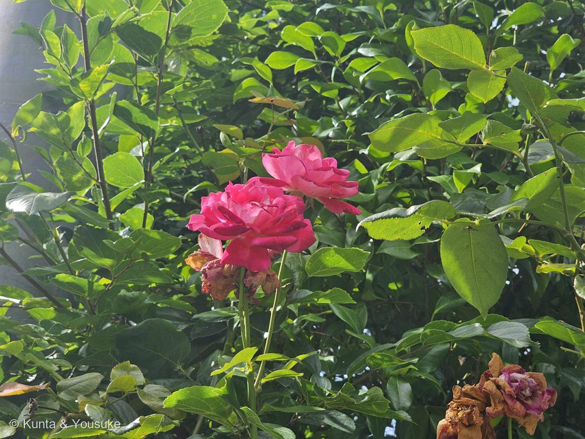

地図を読み込んでいるよ…
🔍 写真も地図も、押しているあいだ拡大して見られるよ（スマホは指を置いてすこし待ってね）。
🌍 の地図＝この子がもともと自生している場所を緑に。属としては北半球に広く分布。栽培バラは中国・ヨーロッパ・中東の複数種の交雑の産物。
⚠⚠これはこの子自身の故郷じゃなくて、「親たちの故郷」。園芸のバラは中国・ヨーロッパ・中東のいくつもの種を、人が何百年もかけて掛け合わせた産物だから、この子が生まれた野原は、どこにもないんだ。
⚠ 地図は国（日本と中国だけ県・省）までしか塗れないから、ほんとうの分布より広く見えていることがあるよ。地図はだいたいの場所。正確なところは、上の文を見てね。
バラ（薔薇）
Rosa sp.
園芸品種 · 品種名は写真からは特定できず（栽培品種は3万〜4万以上）
バラ科 · Rosaceae（バラ属）
燻太さんの一言「この植物だけで図鑑が作れる勢いだよね」……その「品種の多さ」こそが、バラのいちばん深いところ
「品種が多い」── それが、この植物のいちばん深いところ
- バラの栽培品種は3万〜4万以上とされる。バラだけの図鑑、バラだけの植物園（バラ園）が成り立つ——世界でいちばん品種の多い園芸植物のひとつ。燻太さんの見立てのとおり。
- なぜそんなに増えたのか＝人が3つのつまみを、それぞれ別々に回してこられたから。しかもその一つひとつに、分子レベルの答えが見つかっている。
① 八重咲きの正体 ── ABCモデルのCクラス遺伝子
- 花のつくりは古典的な ABCモデルで説明される。Cクラス遺伝子（AGAMOUS）が働く領域が雄しべ・心皮になり、働かない外側が花弁・萼になる。
- バラの八重咲きは、AGAMOUS のホモログ RhAG の発現領域が内側に狭まることで生じる。すると本来は雄しべになるはずだった領域が、花弁に変わる（ホメオティック変換）。花弁が増えるほど、雄しべは減る。
- つまり——人間は数百年かけて、Cクラス遺伝子の発現境界を少しずつ内側へずらす方向に選抜してきた。目の前にある八重の花は、その痕跡。（Dubois ら 2010, PLoS ONE）
- ⚠だから八重の花は、虫にとっては不親切。雄しべが花弁に変わったぶん、花粉が減る。人が見て美しい形は、虫にとっての使いやすさとは別のもの。→ No.034 ペチュニアの八重も、まったく同じしくみ。
② 四季咲きの正体 ── レトロトランスポゾンが壊した遺伝子
- 写真をよく見て。茶色く枯れた咲きがらが残ったまま、すぐ隣で新しい花が咲いている。これは四季咲き（返り咲き）のしるし。
- ヨーロッパの古いバラは春に一度だけ咲く一季咲きだった。四季咲き性は、中国のコウシンバラ（Rosa chinensis）からもたらされた。
- その正体＝RoKSN（シロイヌナズナ TFL1 のホモログ＝開花を抑えるブレーキ）。コウシンバラでは RoKSN にレトロトランスポゾンが飛び込んで機能を失っている。ブレーキが壊れているから、咲き続ける。（Iwata ら 2012, Plant Journal。同じ仕組みが四季なりイチゴにもある＝同じバラ科）
⭐その「四季なりイチゴ」が、図鑑に来た——No.043 ワイルドストロベリー。7月に、花と赤い実が同じ株に同居している。咲きながら、実る。ブレーキが壊れた花の、もう一方の姿。 - 18〜19世紀にヨーロッパのバラと中国のバラが交配され、この壊れた遺伝子が世界じゅうに広まった。現代バラが夏も秋も咲くのは、そのおかげ。この垣根の上の花も、その末裔。
③ 香りの正体 ── 教科書を書きかえた酵素
- 植物のモノテルペン（ゲラニオール等）は普通、テルペン合成酵素（TPS）が作る。ところがバラの花弁は、まったく別の酵素を使っていた。
- NUDX1（Nudix ヒドロラーゼ）＝ゲラニル二リン酸を脱リン酸化してゲラニオール（バラの香りの主役）を作る。TPS 経路ではない。香りの強い品種ほど NUDX1 の発現が高い。（Magnard ら 2015, Science）
青いバラ ── 「持っていない」酵素の話
- バラは F3′5′H（フラボノイド3′,5′-水酸化酵素）を持っていない。だから青い色素デルフィニジンが作れない。英語で「青いバラ＝ありえないこと」という慣用句になったのは、これが理由。
- サントリーと Florigene がパンジーの F3′5′H 遺伝子を導入し、デルフィニジンを蓄えるバラ「アプローズ」を作った（2004年発表）。ただし実際の色は藤色〜モーブ——液胞のpHや共色素が青の発色を左右するため。
- → No.028 ムラサキツユクサは、デルフィニジン系の色素をふつうに持っている。持っている子と、持っていない子。図鑑のなかで対になる。
トゲの正体 ── これも「見た目と正体がちがう」
- バラのトゲは、正確には皮刺（prickle）。表皮とその下が盛り上がっただけで、維管束を持たない。だから横に押すとポロッと取れる。
- No.016 王冠竜（サボテン）の刺は葉が変形したもの（spine）、サンザシなどの棘は枝が変形したもの（thorn）。見た目は同じ「とげ」でも、出どころが全部ちがう。
- さらに近年、バラやナスの皮刺の形成に、共通して LOG 遺伝子（サイトカイニンを活性化する酵素）が使い回されていることがわかった。遠く離れた系統が、何度も独立に、同じ遺伝子を引っぱり出して、同じトゲを作った＝収れんの、分子レベルの証拠。（Satterlee ら 2024, Science）
- 和名薔薇（ばら）は「いばら（茨）＝とげのある低木」から。とげが名前になった植物。
そのほか
- ローズヒップ（赤い実）は偽果。ふくらんでいるのは花托（hypanthium）で、本当の果実はその中の小さな痩果。ここでも「見た目と正体がちがう」。
- Rosa＝ラテン語で「バラ」。さらにさかのぼるとギリシャ語 rhodon、その先はおそらく古代イランの言葉へ。「バラ」という言葉そのものが属名になった、いちばん古いタイプの名前。
- 現代バラ（モダンローズ）は 1867年の 'La France'（ハイブリッドティー第1号）以降。それ以前はオールドローズ。
- バラ科＝No.024 シモツケと同じ科。図鑑で2種目のバラ科。
- この株は生垣をくぐって伸びているように見える。写真の大きな照葉は、たぶん別の低木（生垣）のもの。
名前と学名の由来 ── Rosa＝そのまま「バラ」
- ⭐属名 Rosa は、ラテン語で「バラ」そのもの（さらにギリシャ語 rhodon「バラ」にさかのぼるとも）。──世界じゅうで愛された花の名は、こんなにも短い。園芸品種で種小名までは決められないので sp.。